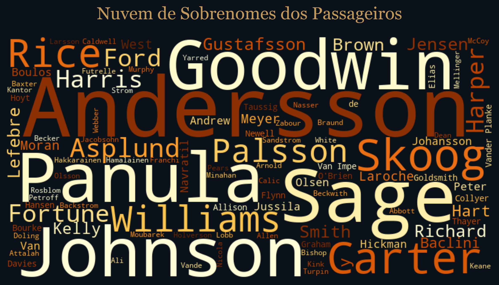

01. Introdução
Este case apresenta uma solução analítica para a clássica competição de Machine Learning do Kaggle. O projeto vai muito além da aplicação cega de algoritmos: o objetivo é analisar os dados usando técnicas de Exploração, Tratamento Estatístico (Missing Values, Scaling) e Otimização de Hiperparâmetros.
02. Análise Exploratória de Dados (EDA)
Abaixo exploramos visualmente o perfil demográfico dos passageiros e como cada característica se relaciona estatisticamente com a taxa de sobrevivência.
Distribuição da Variável Target
Survived). Cerca
de 60% dos passageiros não sobreviveram ao naufrágio. O desbalanceamento exigirá cautela ao analisarmos
métricas como Precision, Recall e F1-Score em vez de focar apenas na Acurácia.
Sobrevivência por Gênero
Status Socioeconômico (Classe do Bilhete)
Sobrevivência por Faixa Etária
Nuvem de Palavras: Sobrenomes dos Passageiros
A Word Cloud abaixo destaca a frequência dos sobrenomes das famílias que embarcaram. Em tragédias históricas, grandes grupos familiares frequentemente enfrentaram maiores dificuldades de coordenação na evacuação.

03. Pré-Processamento e Feature Engineering
Abaixo detalhamos a metodologia estatística de tratamento dos dados:
- Variáveis Categóricas: Conversão em valores numéricos utilizando técnicas de distanciamento (One-Hot Encoding).
- Escalonamento: A Padronização (StandardScaler) deixou as distribuições contínuas (Tarifa, Idade) com média 0 e desvio padrão 1, essencial para a convergência de modelos lineares.
04. Baseline: Regressão Logística
A Regressão Logística é um excelente modelo como baseline. É um modelo de classificação que utiliza a função Sigmoide para transformar a saída de uma combinação linear das variáveis preditoras em uma probabilidade de ocorrência do evento.
05. Random Forest (Ensemble/Bagging)
Em vez de construir apenas uma árvore de decisão, o modelo treina múltiplas árvores (uma "floresta") usando diferentes subamostras dos dados (Bootstrapping) e sorteando subconjuntos de variáveis. A previsão final é dada por votação majoritária (Bagging), o que o torna resistente a overfitting.
06. XGBoost (Ensemble/Boosting)
O XGBoost (Extreme Gradient Boosting) é uma implementação otimizada e avançada do método Gradient Boosting. Diferente da Random Forest que constrói árvores independentes, o XGBoost constrói árvores sequencialmente, onde cada nova árvore é focada em corrigir os erros residuais da árvore anterior (Boosting).
07. Comparação Global de Modelos
Existem três visualizações que representam o "padrão ouro" para avaliação de modelos de classificação: Matriz de Confusão, Curva ROC e Curva Precision-Recall (essencial para datasets com classes desbalanceadas).
| Modelo | Acurácia | Precisão | Recall | F1-Score | ROC-AUC |
|---|---|---|---|---|---|
| Random Forest | 82.68% | 81.16% | 75.68% | 78.32% | 89.31% |
| Logistic Regression | 82.12% | 78.38% | 78.38% | 78.38% | 89.29% |
| XGBoost | 82.12% | 83.87% | 70.27% | 76.47% | 91.02% |
08. Árvore de Decisão: Importância das Variáveis
Explore o Projeto no GitHub
Acesse o repositório completo para explorar o código-fonte, analisar e verificar todos os scripts que fundamentam este estudo de Machine Learning.